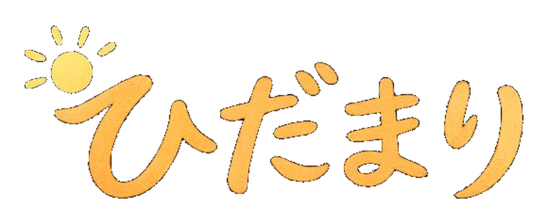

その子の「ここなら大丈夫」と思える場所
算数・数学が苦手な子のための、AI家庭教師LINE Bot。
つまずきに自然と立ち戻り、
小さな「できた！」を積み重ねる。
勉強が怖いから、楽しいへ。
わからない原因を対話の中で見つけ、自然に前の単元へ。「戻されている」と気づかせない設計。
小さなステップをクリアするたびに、先生が一緒に喜ぶ。自信が少しずつ育つ。
ヒントと問いかけで導く、ソクラテス式の対話。「自分で解けた」体験を生む。
塾のように進度を合わせる必要なし。必要なら小1まで戻る。必要なければ先取りもできる。
LINE Botを友だち追加。自分に合った先生を選ぶ。
短い診断テストで、今の理解度を確認。結果は先生だけが見る。
対話しながら問題に取り組む。つまずいたら、先生が自然にヒントをくれる。
復習が終わったら予習へ。気づいたら、勉強が少し楽しくなっている。
自分に合った先生を選んで、いつでも変更OK
「これさ、お菓子分けるときと同じだよ」が口癖。身近なものに置き換える天才。
「次のステージいこう！」問題をミッション化。達成感の演出が上手い。
ひだまりは現在β版テスト中です。
5〜10名のお子さまに、実際に使いながら
育てるご協力をお願いしています。
リリース情報はInstagramとXで発信中
@akarilab_jp をフォロー